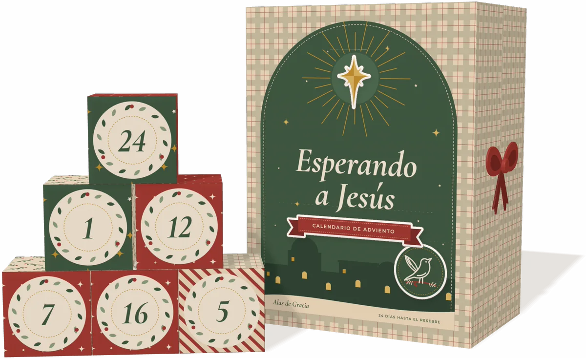
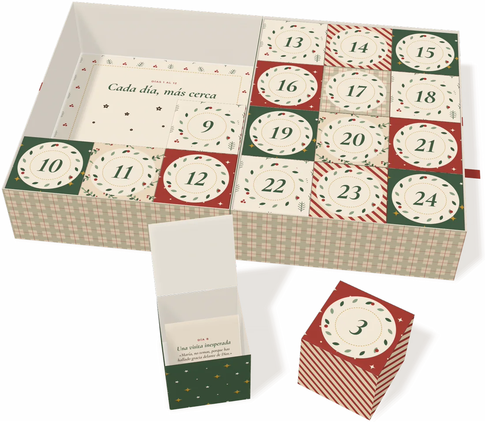
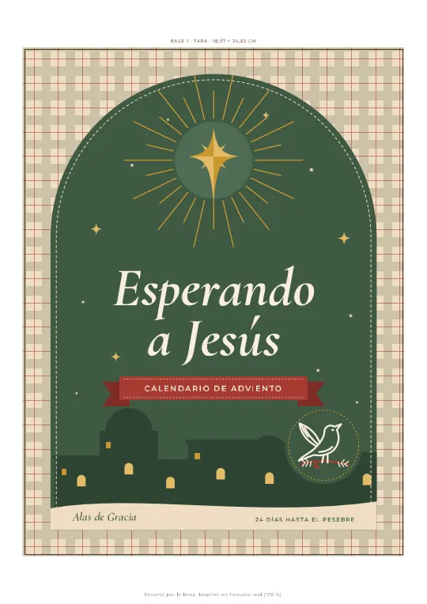
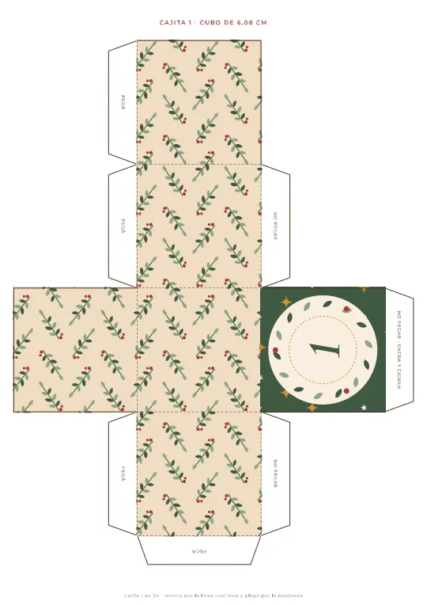
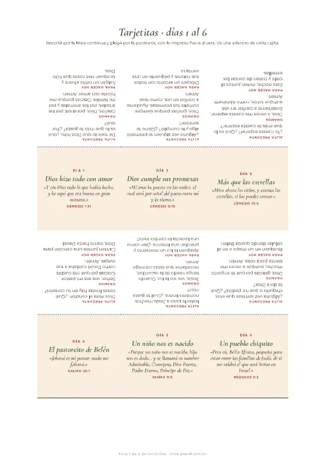
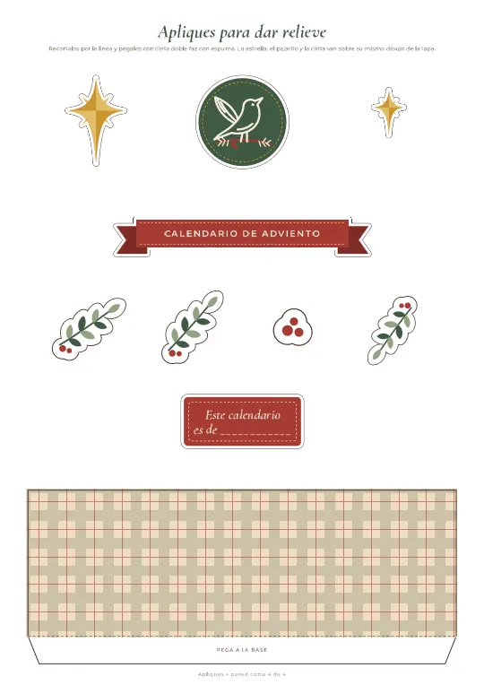
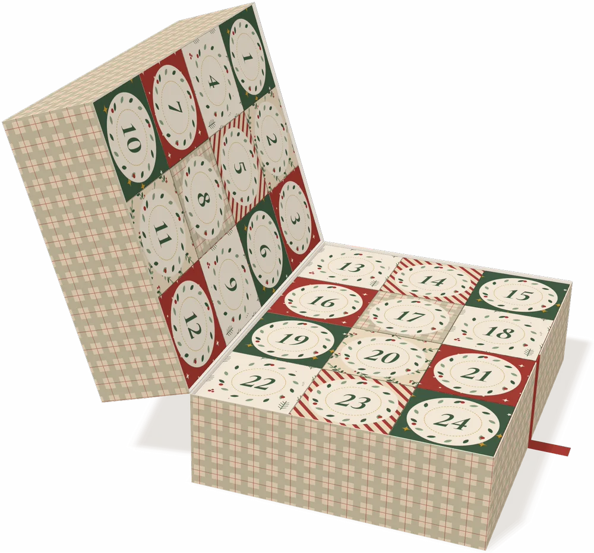
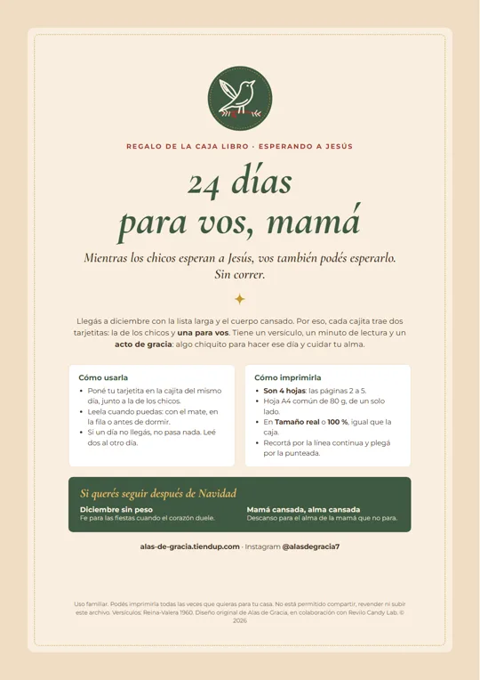
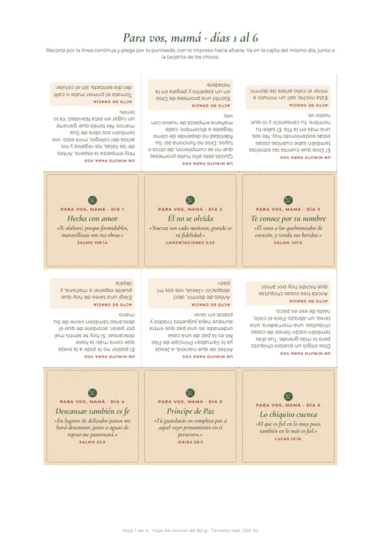
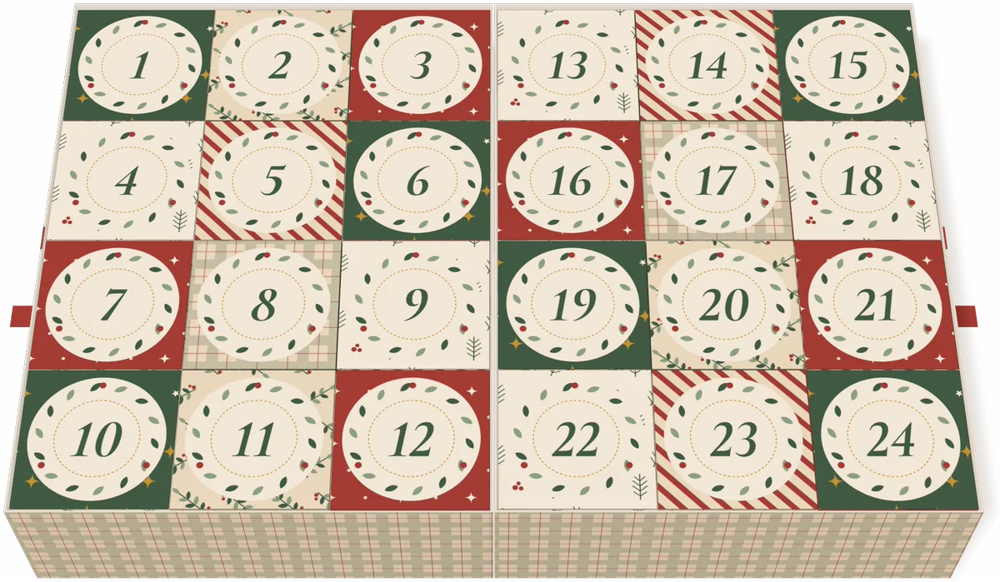

Abrí 3 cajitas antes de Navidad
Elegí tres números del 1 al 24 y mirá lo que tu familia va a encontrar, día por día, en la caja libro Esperando a Jesús.

¿Cuáles abrís?
Tocá un número. Adentro hay una tarjetita, un juego y un pedacito del cuento.

Son hojas reales, listas para cortar
37 hojas A4 con líneas de corte y de pliegue. Estas son cuatro de ellas.




De tu impresora a tu mesa
- 1ImprimíEn Tamaño real, en casa o en una copistería.
- 2Recortá y plegáCada línea ya está marcada. La guía te lleva paso a paso.
- 3Armá la caja y las cajitasCon plasticola. Poné una tarjetita en cada una, y si querés una sorpresa.
- 4Abran una por díaDel 1 al 24 de diciembre. Y en el fondo aparece el pesebre.

Todo en un PDF
- Molde completo de la caja libro
- 24 cajitas numeradas
- 24 tarjetitas con versículo, pregunta, oración y actividad
- Apliques para decorar la tapa
- Guía de impresión y armado
- Versión a color y versión para papel kraft
- De regalo: 24 tarjetitas para la mamá
Vas a necesitar: 33 hojas A4 de 180 a 220 g (blancas con brillo o mate, o kraft), 4 hojas A4 blancas comunes de 80 g (8 con el regalo para mamá), tijera o cúter, regla, plasticola, cinta doble faz con espuma y 60 cm de cinta.
24 días para vos, mamá
Mientras los chicos esperan a Jesús, vos también podés esperarlo. Sin correr. Cada cajita trae dos tarjetitas: la de los chicos y una para vos.
- Un versículo para el día
- Un minuto de lectura, pensado para la mamá que llega cansada a diciembre
- Un acto de gracia: algo chiquito para hacer ese día y cuidar tu alma
Son 4 hojas A4 comunes, en un PDF aparte. Van en la misma cajita del día.


Hasta el 30 de noviembre. Después, $9.900.
Quiero mi cajaIncluye de regalo las 24 tarjetitas para la mamá.
Producto digital: recibís los PDF y los imprimís. No se envía nada por correo. Las sorpresas no están incluidas. Uso familiar.

Antes de imprimir
¿Me llega una caja a mi casa?
No. Es un PDF: lo descargás, lo imprimís y lo armás vos.
¿Para qué edad es?
Las tarjetitas están pensadas para chicos de 4 a 10 años, acompañados por un adulto.
¿Trae los cuentos completos?
La caja trae las 24 tarjetitas. Los cuentos completos y los dibujos para colorear están en el libro Esperando a Jesús.
¿Qué es el regalo para mamá?
Son 24 tarjetitas para vos, una por día, con un versículo, un minuto de lectura y un acto de gracia. Vienen en un PDF aparte, junto con la caja. Si ya la compraste, escribinos por Instagram y te lo mandamos.
¿Y si la compro después del 1 de diciembre?
Abran dos cajitas por día hasta ponerse al día.
¿Cuánto lleva armarla?
Lo que más tiempo lleva son las 24 cajitas. Conviene armarla de a poco o entre varios.
¿La puedo usar en la iglesia?
La licencia es de uso familiar. Para una iglesia o escuela bíblica, escribinos por Instagram a @alasdegracia7.